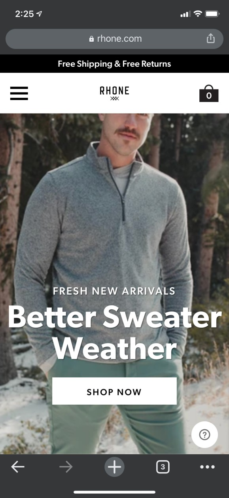
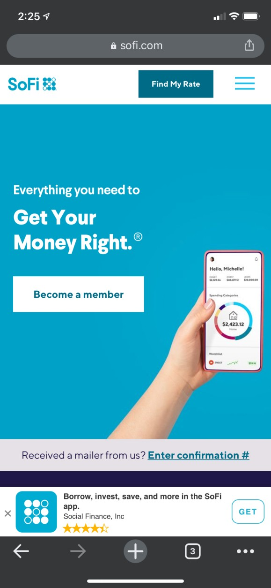

Fitt's Law
Rhone
A great example in my opinions of Fitt's law is the Rhone site. There is a large button to direct customers to the shopping page. They also have a large picture that acts the same as the button directing them to the shop page.
Hick's Law
Entrata
The Entrata mobile site shows an a great example of Hick's Law. The site gives you two choices. You can either see stories from past customers/current users or you can request a demo of the service. This helps consumers decide if the service Entrata offers is best for them.
White Space & Clean Design
SoFi
The SoFi site is very appealing in my eyes. Everything from the colors to the layout. And there isn't to many things going on. The blue color acts as white space since it covers a lot of the page.